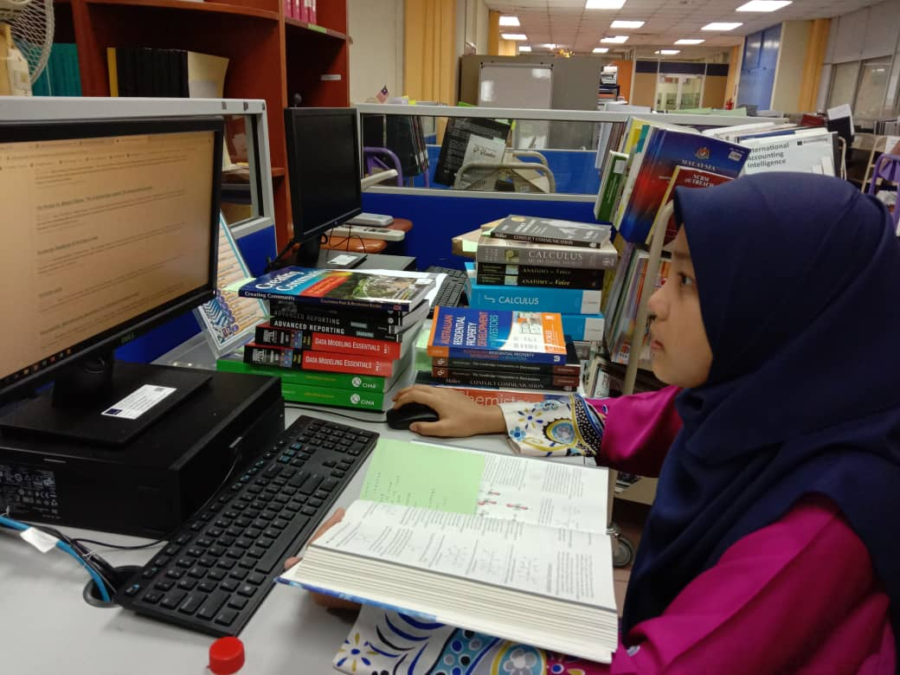
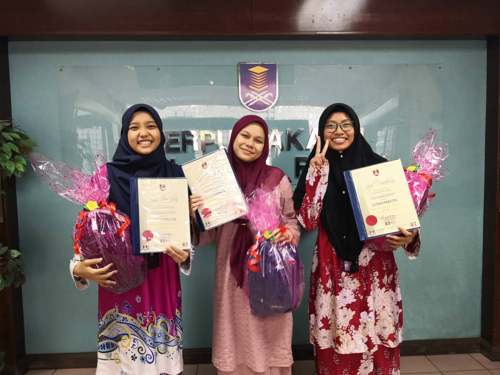
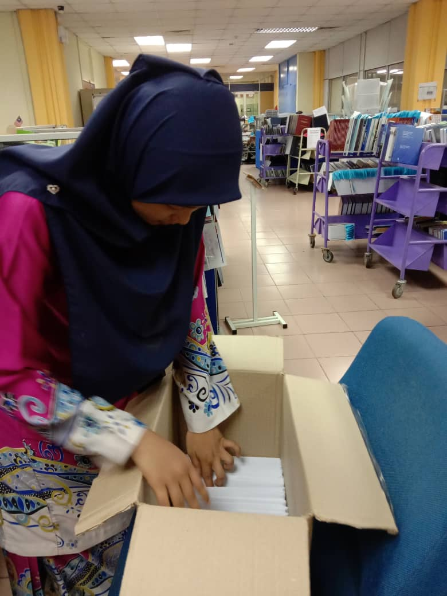
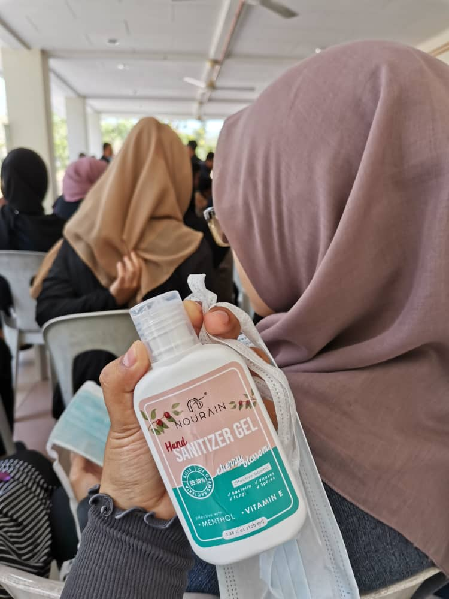
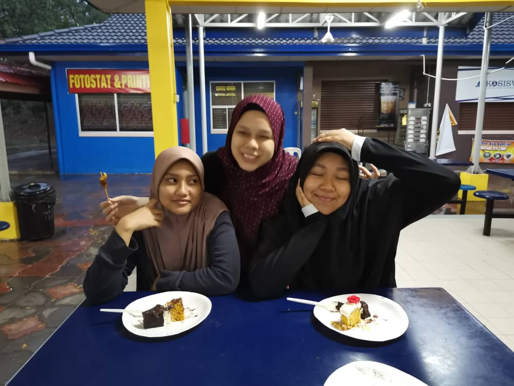
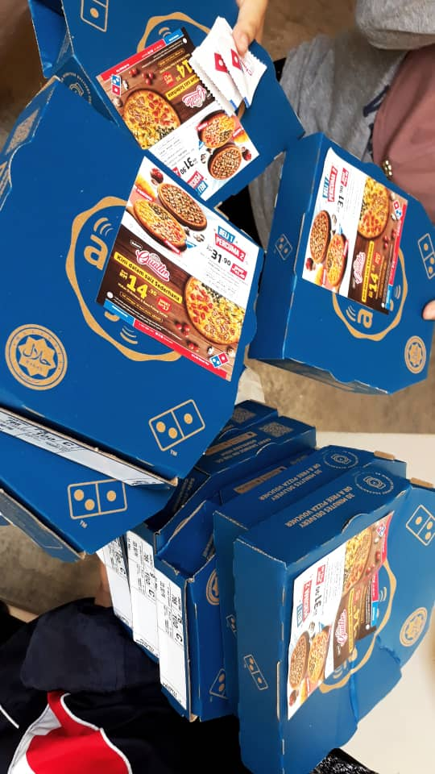

Between Mymeaningful Experience
I have been doing industrial training in library UITM Shah Alam for 2 months at the end of semester 3. During my practical training at Perpustakaan Tun Abdul Razak 1 (PTAR1). I have learned a lot about the any information that related with library field. Industrial training taught me a lot to be responsible and trustworthy in carrying out assigned tasks and not taking the task for granted while working or asking others to do work for us. My daily routine puts me to be more diligently and strives to learn something new. Then, the working condition is comfortable because they are very taking care of their time consuming as a priority, the pleasant attitude of some colleagues makes me happy to work with them. The knowledge shared to me made me closer to them, despite the employees come from different departments. The work environment which is calming makes it easier for me to work and perform my duties. Furthermore, one attitude that I really respect is every week, they will eat together and spend time together at lunch or breakfast even though they are different departments.
|  |  |  |
|---|
I once volunteered to help with programs run by the Islamic affairs club at UITM such as leadership activities program. With this kind of program, it gives me a lot of confidence in dealing with the public. The purpose of this program is to increase self -confidence in front of people. Every activity performed can educate the nature of courage in oneself when dealing with a crowd. In addition, it can also cultivate the nature of cooperation in performing group tasks, indirectly it can add contacts in each task performed. Overall, activities like this can boost my self -confidence and in a short period of time, many friends I can get to know when attending a program like this.
| |
|
|
|---|
Another experience i cannot forget, when me and my diploma friends were not allowed to go home on sem leave due to the increase covid19 cases in Malaysia. At first, everyone was a little sad because at that time the epidemic was very new and not many people knew about the existence of this epidemic. After a few weeks of being exposed to the facts of the epidemic, we felt quite relieved because the risk of being infected was less when we did not face many people when we wanted to go home. a lot of memories that happened while we were quarantined in college. Every student's welfare is well taken care of by the University. Food and necessities are all sufficient while sitting there. All the memories that happened were the happiest and most meaningful I have ever encountered.
|  |  |  |
|---|
This website is develop for 'Basic Web Design and Content Management' (IMS 456),
Any information or material are used for educational purpose only.